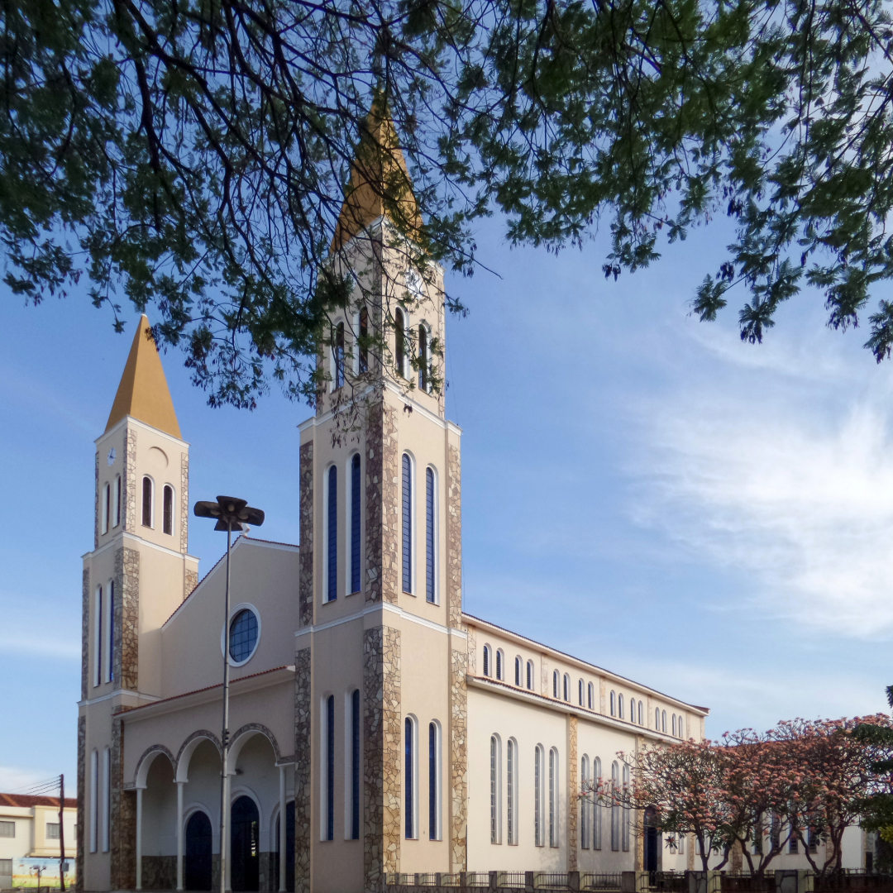
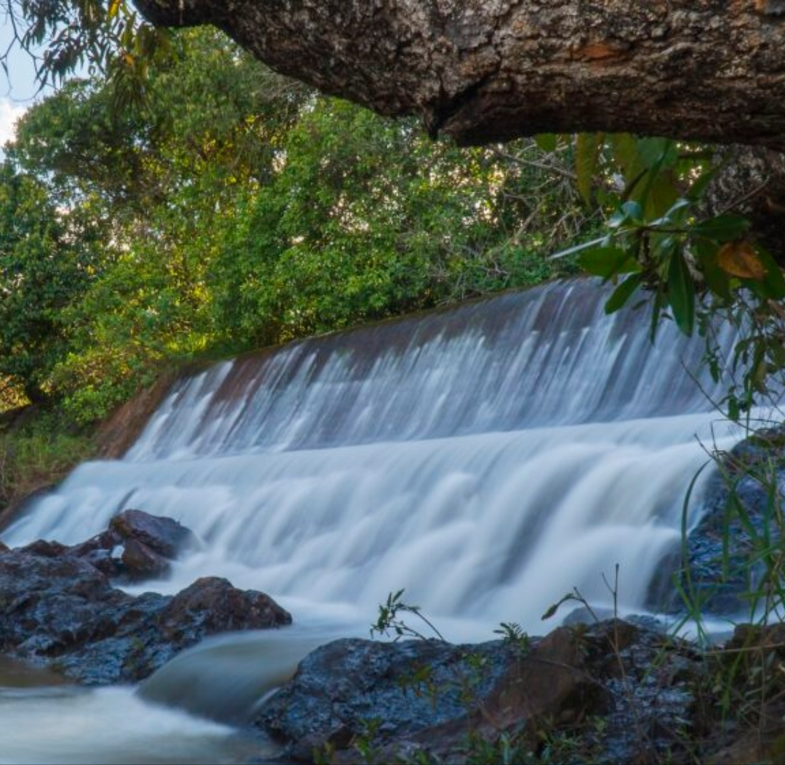

Explore os principais pontos turísticos de Formosa. Conheça as belezas naturais, o potencial do nosso ecoturismo e os segredos da nossa região.

A Catedral Diocesana Imaculada Conceição é a Igreja Mãe da Diocese de Formosa, que foi criada no ano de 1836. No site abaixo você encontra mais informações sobre a Catedral:
O Parque Municipal do Itiquira, retornou após 30 anos de concessão privada, para a administração da Prefeitura Municipal de Formosa, coordenada pela secretária de Turismo. No site abaixo você encontra mais informações sobre o Itiquira:
O Poço Azul em Formosa, Goiás (região do Distrito de Bezerra), é um atrativo natural conhecido por suas águas cristalinas e intensamente azuis, situado a cerca de 60 km da sede do município e 120 km de Brasília

O local une natureza e história, oferecendo cachoeiras, trilhas, tirolesa, arvorismo, restaurantes e o Museu da Usina.